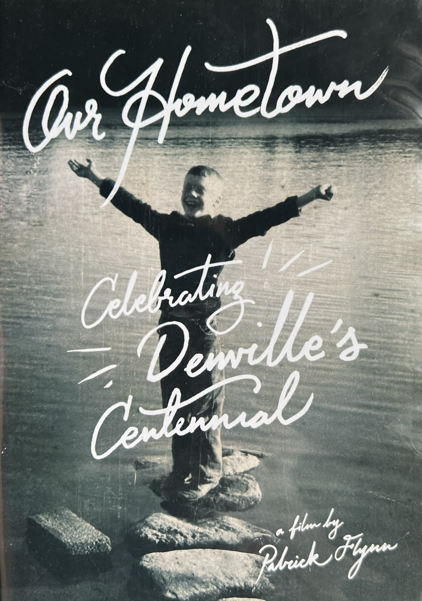

"Our Hometown" (2013)
Produced in 2013 in honor of my hometown's centennial, and in conjunction with the Denville Historical Society, I wrote, produced, shot, and directed the following documentary feature. It was included with other items of import to be sealed within the centennial vault, which is housed in the municipal building. The vault is scheduled to be reopened in 2113.
The plot synopsis is as follows: "Denville's history is a rich and vibrant one. "Our Hometown: Celebrating Denville's Centennial" provides the viewer a
visual window into that history. Over twenty residents, from historians and government officials, to educators, religious leaders, and grandparents recount
our growth as a township. Visually striking and featuring a triumphant score from jazz giant Tony Mottola, the film is a powerful testament to the town's
dedication to progress and community."
It is presented here in its entirity.